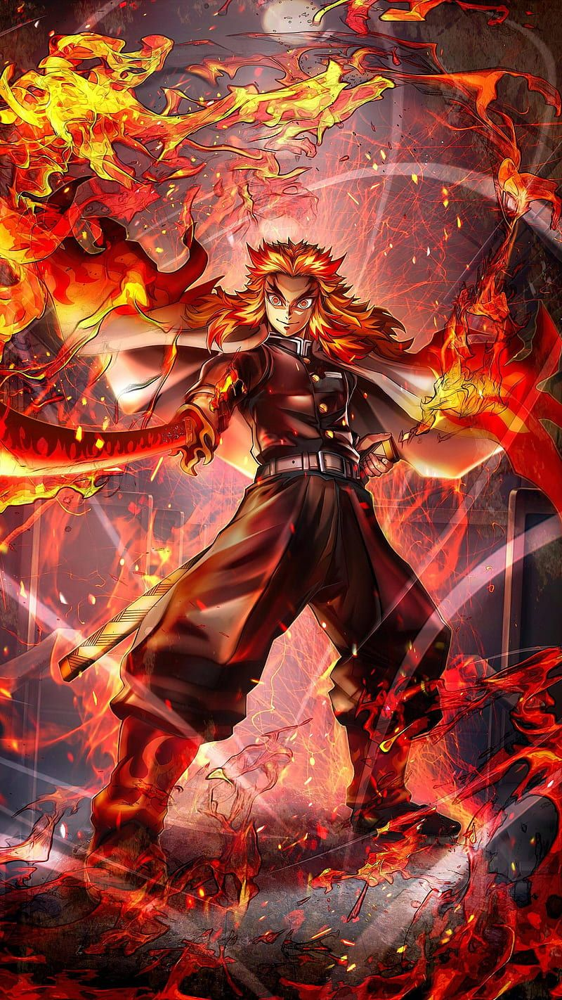
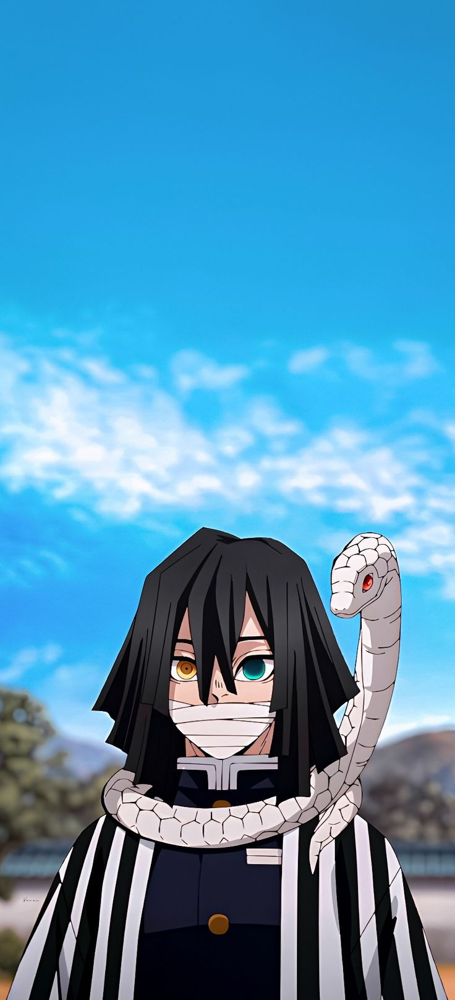
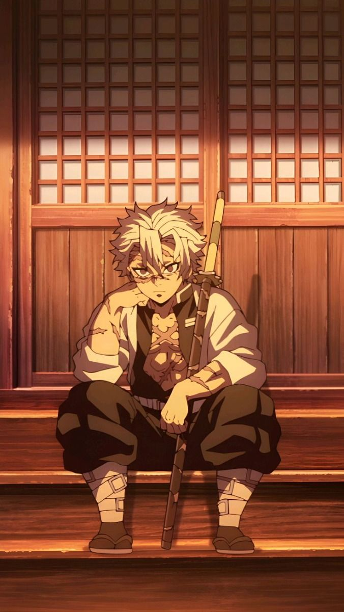
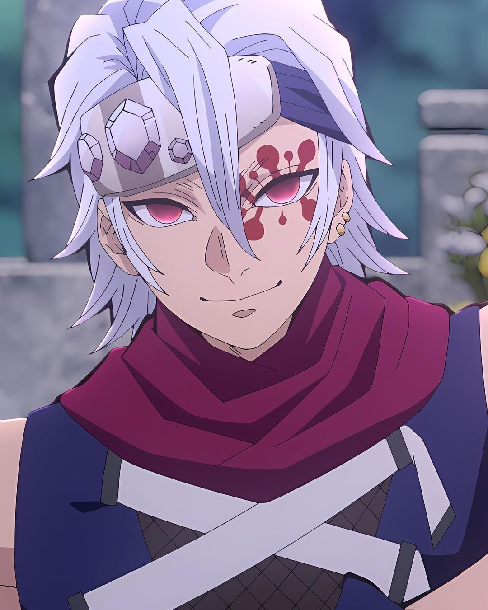
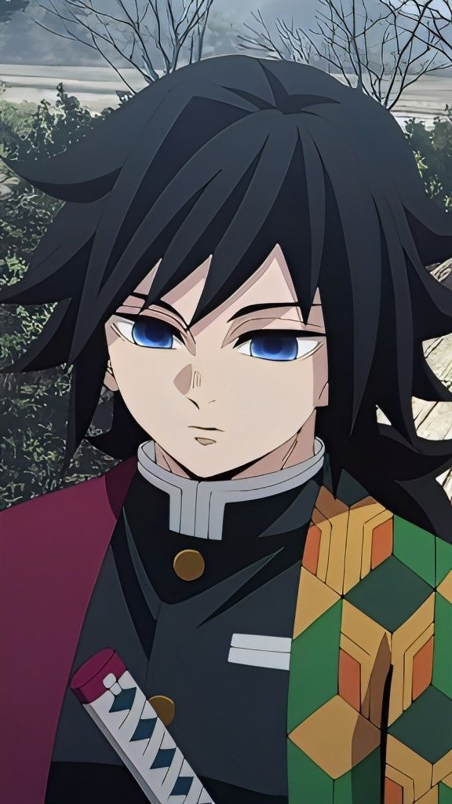
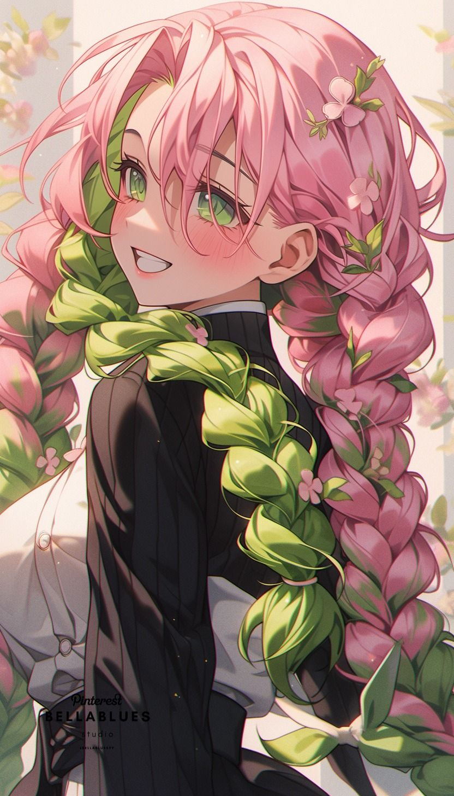
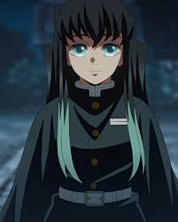
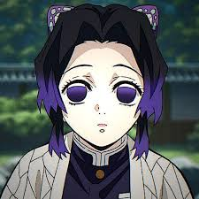
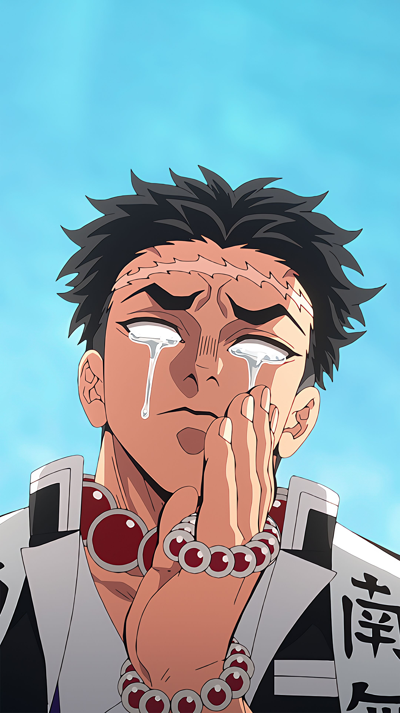
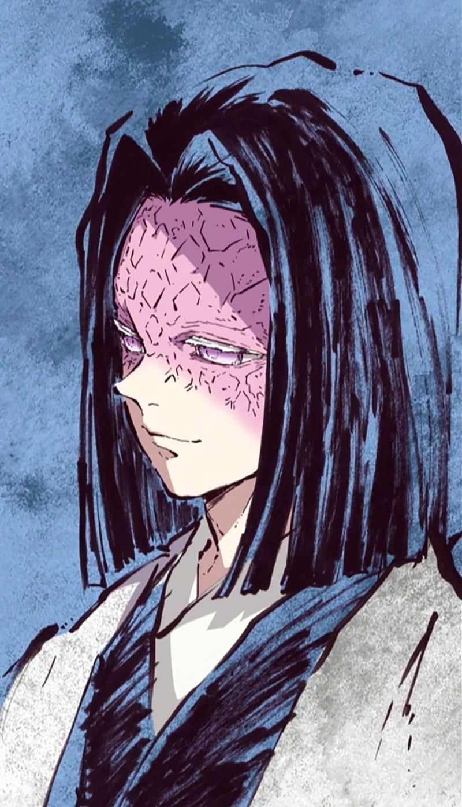

Fue un cazador de Demonios y el Pilar de la Llama del Cuerpo de Exterminio de Demonios.

Es un Cazador de Demonios, miembro de los Pilares siendo conocido como el Pilar de la Serpiente dentro del Cuerpo de Exterminio de Demonios

Es uno de los Cazadores de Demonios más fuertes y ágiles, destacando así dentro del grupo de élite como un Pilar siendo el actual Pilar del viento

Tengen fue un Cazador de Demonios y el antiguo Pilar del sonido del Cuerpo de Exterminio de Demonios

Fue un cazador de demonios perteneciente al Cuerpo de Exterminio de Demonios y Pilar del Agua

Fue cazadora de demonios perteneciente al Cuerpo de Exterminio de Demonios y Pilar del Amor

Fue un cazador de demonios perteneciente al Cuerpo de Exterminio de Demonios y Pilar de la Niebla

Fue una Cazadora de Demonios que se desempeñaba como uno de los Pilares; ella ocupó el puesto como el Pilar del Insecto

Fue un cazador de demonios perteneciente al Cuerpo de Exterminio de Demonios y Pilar de la Roca

Fue el líder del Cuerpo de Exterminio de Demonios conocido principalmente como Oyakata-sama